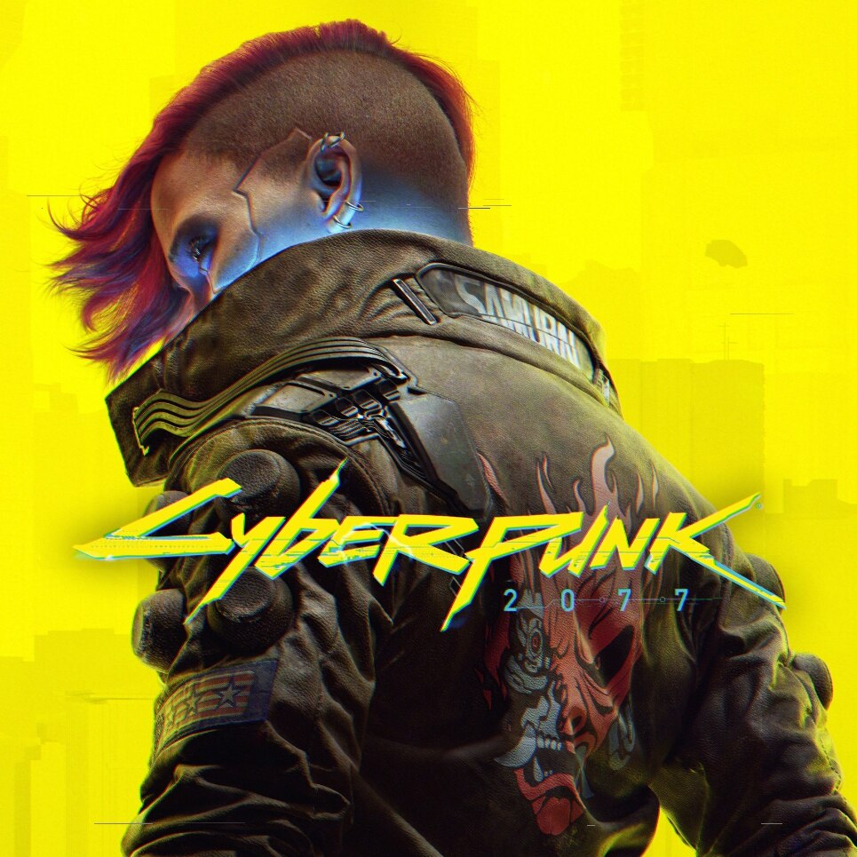

Marvel's Spider-Man 2

Developer(s): Insomniac Games
Publisher(s): Sony Interactive Entertainment
Director(s): Bryan Intihar, Ryan Smith
Composer(s): John Paesano
Series: Marvel's Spider-Man
Platform(s): PlayStation 5
Release: October 20, 2023
Genre(s): Action-adventure
Mode(s): Single-player
Starfield
Developer(s): Bethesda Game Studios
Publisher(s): Bethesda Softworks
Director(s): Todd Howard
Composer(s): Inon Zur
Engine: Creation Engine 2
Platform(s): Microsoft Windows, Xbox Series X/S
Release: September 6, 2023
Genre(s): Action role-playing
Mode(s): Single-player
The Legend of Zelda: Tears of the Kingdom
Developer(s): Nintendo EPD
Publisher(s): Nintendo
Director(s): Hidemaro Fujibayashi
Producer(s): Eiji Aonuma
Writer(s): Mari Shirakawa, Naoki Mori, Akihito Toda
Composer(s): Manaka Kataoka, Maasa Miyoshi, Masato Ohashi, Tsukasa Usui
Series: The Legend of Zelda
Platform(s): Nintendo Switch
Release: May 12, 2023
Genre(s): Action-adventure
Mode(s): Single-player
Baldur's Gate 3

Developer(s): Larian Studios
Publisher(s): Larian Studios
Director(s): Swen Vincke
Producer(s): David Walgrave
Writer(s): Adam Smith
Composer(s): Borislav Slavov
Series: Baldur's Gate
Platform(s): Windows, PlayStation 5, macOS, Xbox Series X/S
Release: August 3, 2023
Genre(s): Role-playing
Mode(s): Single-player, multiplayer
Cyberpunk 2077 (2.0 version + Phantom Liberty)
Developer(s): CD Projekt Red
Publisher(s): CD Projekt
Director(s): Adam Badowski, Konrad Tomaszkiewicz, Gabe Amatangelo
Producer(s): Jędrzej Mróz, Przemek Wójcik, Michał Stec
Writer(s): Marcin Blacha, Tomasz Marchewka
Composer(s): P. T. Adamczyk, Marcin Przybyłowicz, Paul Leonard-Morgan
Series: Cyberpunk
Engine: REDengine 4
Platform(s): PlayStation 4, Stadia, Windows, Xbox One, PlayStation 5, Xbox Series X/S
Release: December 10, 2020 (original), September 6, 2022 (Phantom Liberty & 2.0 version of the original game)
Genre(s): Action role-playing
Mode(s): Single-player